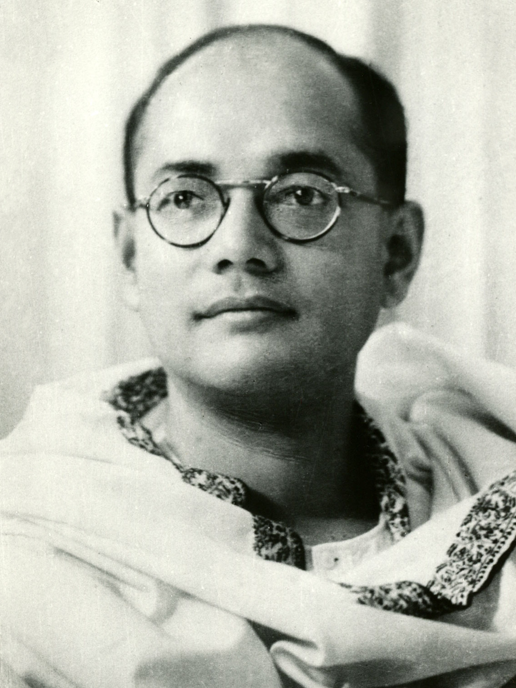

Bose in the 1930s.
Here's a time line of Bose's life:
- 1897- Born in Cuttack, Odisha.
- 1921- Set as the leader of the Congress and Indian nationalism in Bengal.
- 1939- Organised the All India Forward Bloc.
- 1941- Escape to Nazi Germany.
- 1943- Collaboration with Nazi Germany.
- 1943- Subhash Chandra Bose took command of the Indian National Army and assumed the leadership position of the Indian Independence League.
- 1945- ubhash Chandra Bose boarded a Japanese passenger aircraft at Matsuyama Airfield,Taiwan for a trip to Japan. The aircraft crashed immediately after takeoff and Bose was seriously burned. He was rushed to a military hospital near the airfield, but the doctors were not able to save him.
"It is blood alone that can pay the price of freedom. Give me blood and I will give you freedom"
---quote by Subash Chandra Bose